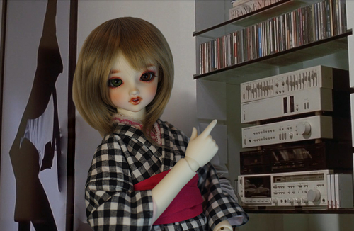
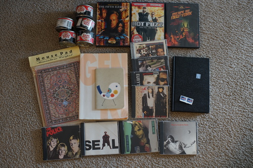
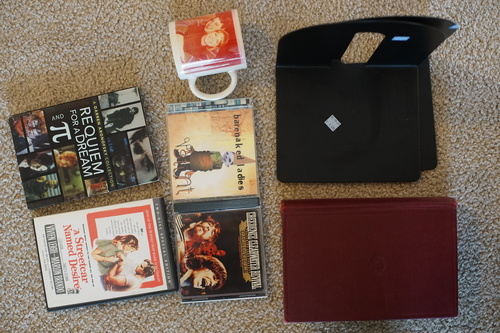

the hands and feet i ordered from volksusa arrived. I'm having an issue with the feet, but ill get back to you on that once the issue is resolved/unresolved. I did take a good photo if i may say so myself. be sure to post this on your favorite web forum at your earliest convenience
someone with good taste donated recently because goat dam. i went a little nuts but im throwing out all the cd and dvd cases anyway. so many 80s CDs and a movie lover must have died because there were a ton of great DVDs (that we already have). i found a box of CDs and was like "oh H*CK yes"
also just about 30 dvds of train footage?? RIP local train otaku
my pile:
it's on clearance so i just bought the rest. i love it...
I haven't seen this one but ryan says I should watch it.
perfect for my dolls, the mousepad foam came out incredibly easily!
i think i'm coming to the conclusion i dont want a lined diary next year. its not fun to draw over lines or grids and i dont want to be limited to writing only
found these bad boys on the street on the walk home
Ryan's pile
Ryan only wanted it for Pi
my beauty was once compared to vivien leigh. awfully kind words but i dont see the resemblance.
my disc drive can read like 50% of CDs for some reason. it makes ripping them a terrible pain.
we walked past the weed store and it was awfully busy. its wednesday so i asked why?? why is everyone getting high on wednesday?? it is an easy to answer question.
are there like any lampworkers/glassblowers around who aren't making bongs? why isnt anyone making glass pens or doll eyes? i dont want a bong!!!! it would be nice to support american artists who do beautiful work but there doesnt seem to be anyone around
on that note, i need to check if i've taken photos to make a chihuly shrine.